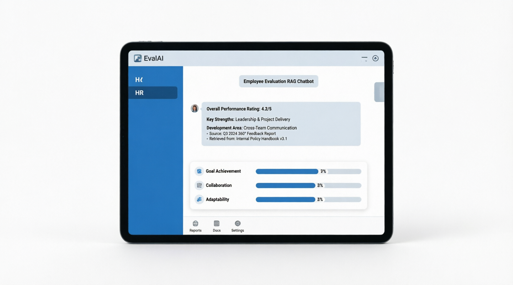

01AI • Knowledge systems
Employee Evaluation RAG Chatbot
A deployed appraisal-support assistant that retrieves relevant process guidance from a vector database and generates context-aware answers through a conversational Streamlit interface.
View live project